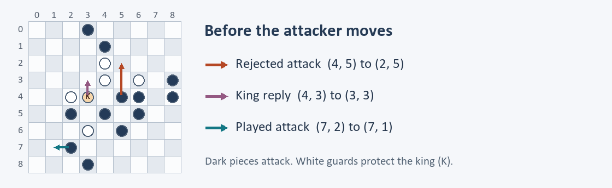

JC4004 · COMPUTATIONAL INTELLIGENCE · 2026–27
Searching for the defender’s best reply
A Tablut player with role-specific search under a sixty-second clock per side
1 Introduction
In the course version of Tablut, sixteen attackers move first against eight guards and a king. The attackers must capture the king while the defenders need only escort him to any edge of the nine-by-nine board. Each side receives sixty seconds for an entire game. The tournament awards two points for a win, one for a draw and zero for a loss, with each team playing both roles [1]. An attractive capture can therefore cost two points if it opens a file for the king. Conversely, a quiet move that closes a future escape route can be worth more than an immediate capture.
The project asks where a player should spend its next unit of computation. The proposed entry uses a learned position estimate on defence and a separate tactical check on attack. Its design grew out of two questions suggested by computer Go. Can a search revisit promising lines while leaving room for surprising replies? Can work spent analysing the opponent’s second choice be recovered if that move actually appears? We tested these ideas under the official referee, judged choices by tournament points, and examined individual decisions to see when extra computation changed the move.
2 Theoretical basis and rationale
Which branch needs another visit?
A depth-limited minimax search compares moves against the strongest reply found at its horizon. Alpha–Beta pruning can calculate that same minimax result with fewer nodes. In Tablut, a quiet opening often presents many legal sliding moves with similar material scores. We chose a policy-guided tree search so that the depth reached in a promising continuation can differ from that reached in its neighbours. AlphaGo Zero and KataGo motivated this use of selective exploration and self-play [2, 3]. Our small player can run on a CPU and learns only its position evaluation.
At a node with N visits, a child with n visits receives priority Q + 1.7 P √(N + 1)/(1 + n). Here Q is its mean value from the choosing player’s perspective, and P is its prior weight. Four fifths of the prior comes from a board evaluation and one fifth is uniform across legal moves. At the root, unexplored, unresolved moves get a first visit before a branch gets another. Thereafter a well-performing move earns more visits, while an overlooked move can still rise as the parent’s visit count grows. Each visit follows alternating moves by both sides. A forty per cent share of visits describes the work spent on a move. It gives no direct estimate of the chance of winning with it, especially when several continuations end in draws.
METHOD
What a position estimate can tell us
For a newly visited position the player averages a bounded hand-built score and the fitted difference between win and loss probabilities. Values change sign when backed up across a move. The fitted model uses eleven terms, including an intercept, to estimate three outcomes. It sees the side to move, material lost, the king’s distance from the centre, his mobility and the occupancy of his escape routes. A lone guard on a ray matters because that guard can step aside. Encoding whose turn it is helps distinguish a route the defenders can open immediately from one the attackers can still block.
Training labels come from completed games. Positions within each game share its total training weight so a long draw cannot dominate merely by contributing more boards. We generated 64 games with a frozen teacher at 320 visits per move. We combined 48 of those games with earlier training data and reserved 16 complete games. Removing boards seen in training, including rotations and reflections, left 661 evaluation positions. Retraining reduced held-out log loss from 1.330 to 1.251. Updating only the previous model’s outcome prior reached 1.250. This comparison gives little evidence that retraining learned better spatial features.
When one reply outweighs a good average
The attacking side needs a different safeguard. A move may score highly across many continuations yet lose against one precise reply. The first review examines up to ten candidates, scoring a move from its tree mean and the worst defender response examined. The dynamic review uses the time remaining in that allowance. Once the king leaves the throne, or when the leading values on the throne differ by at most 0.10, it asks whether a defender reply wins immediately or guarantees an escape on the defender’s following turn against every legal block. It switches only if it verifies that danger and finds an alternative without the same short forced loss. If time runs out, it keeps the first review’s choice.
A decision that changed · Kurz, seed 13405, ply 27
Using zero-based (row, column) coordinates, the first review chose (4, 5) → (2, 5). The defender could answer (4, 3) → (3, 3). Every legal attacking reply then allowed a defender win in one. The dynamic review chose (7, 2) → (7, 1) instead. Both recorded games ended in attacker wins, but followed different lines. The rejected move and its refutation were checked from the same position with the official rules.

IMPLEMENTATION AND EVALUATION
3 Implementation details
The referee constructs Player() from Team01.py. Its two public methods, play_attacker(board) and play_defender(board), accept the nine rows and return the source and destination as row–column pairs. Internally an 81-character board indexes precomputed rays. moves(board, attack) enumerates legal slides and advance(board, move) updates captures. The transition handles the throne and its four neighbours separately because the king’s capture rule changes there. When searching, the player tracks board and side together to detect repetitions. It keeps the subtree below its actual move and looks for the opponent’s actual reply there on the next turn. This can recover visits even when the opponent played the second or third choice.
ValueModel.value(board, attack) uses 33 embedded coefficients per model to score a position for the side to move. Attack uses the earlier weights with a material-and-escape-route evaluation. Defence uses the retrained weights. NumPy fitted the weights offline. Match play uses Python’s standard library, including math for scoring, functools for caching and time.perf_counter for deadlines. DynamicAttack.review(board, attack, ordered_moves, deadline) uses up to 23% of the ordinary move allowance for both tactical checks. The first check weights the search mean at 0.55 and the worst reply at 0.45, with special handling for terminal results.
ConditionalClock.budget() estimates how many of our turns remain. At ply t it considers only historical games longer than t, halves their remaining plies with upward rounding, and smooths the estimate with two fallback observations. The original clock used games lasting 25, 57 and 35 plies. It protects 0.6 seconds and spends more when the king faces a contested escape corridor. Closely scored candidates earn a small extension, which increases if their order or estimates change. Much of one side’s clock can thus be spent before the ending if several decisions in the middle are genuinely difficult.
4 Conclusions and self-reflection
On the common defensive schedule, the retrained defender scored 23/28 and ordinary PUCT scored 14/28. We retained the retrained defender. The attack candidates had tied at 54/60 over 30 earlier pairs. We compared them on four fresh seeds against each of eight defences.
| Attacking policy · fresh schedule | Wins | Draws | Losses | Points |
|---|
| Dynamic refutation | 26 | 2 | 4 | 54 / 64 |
| Retrained PUCT | 25 | 0 | 7 | 50 / 64 |
INTERPRETATION AND CREDIT
Dynamic attack improved four pairs, tied twenty-five and worsened three. The field included two independent Java Tablut engines adapted to the course rules, Alpha–Beta, rollout search and two policies sharing tLut’s evaluation [4–8]. We selected dynamic attack on this four-point advantage. Shared evaluators and the small number of changed outcomes limit how well it predicts performance against classmates.
In a separate packaging check under Python 3.12.1 and the official referee, the single-file player beat the earlier Alpha–Beta baseline in 75 plies as attacker and lost in 41 as defender.
The hardest question was whether an improved score came from a better decision. Against Kurz and ordinary PUCT, dynamic review scored 26/32 versus 14/32 for fixed review on eight seeds per opponent. The traces verified one move replacement, at ply 27. Machine scheduling also changes visit counts under a wall-clock deadline. We therefore credit the review with catching that specific mistake and leave the rest of the score difference unexplained.
We also tested the clock separately. Of 128 historical games, 25 continued beyond ply 80. From there the attacker averaged another 19.6 turns. Replacing the original three game lengths with this larger sample changed only the attacking clock. Eight fresh seeds against each of two defenders produced 32 games. Against Kurz, both clocks scored 12/16. Against a held-out Alpha–Beta defender that estimates escape distance, the original scored 12/16 and the candidate 10/16. From ply 81, avoidable forced losses within three plies fell from 2 in 90 attack decisions to 1 in 111. Neither clock timed out. We kept the original on its 24/32 to 22/32 points advantage. A larger trial should include more long games before treating the difference in late errors as reliable.
5 Summary of individual roles
6 References and acknowledgements
[1] University of Aberdeen. JC4004 Computational Intelligence coursework assignment, 2026–27, pp. 2–6.
[2] D. Silver et al. “Mastering the game of Go without human knowledge.” Nature 550 (2017), 354–359. doi.org/10.1038/nature24270
[3] D. J. Wu. Accelerating Self-Play Learning in Go (2019). arXiv:1902.10565
[4–6] Benchmark code includes Zulko/easyAI (2.0.12), pbsinclair42/MCTS, MatteoFasulo/Tablut (heuristic).
[7–8] Tablut opponents include Randy Li, tablut and Philipp Kurz, CS61B_P2_Tablut.
Generative AI disclosure. OpenAI Codex assisted with strategy development, implementation, running experiments, analysis and drafting this report. The numerical results come from local referee logs. The coursework brief sets the conditions for acknowledging AI assistance [1].